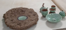

|  | 作品名稱 | 海潮音：礁石茶盤、結晶側把壺、黃陶對杯、雙杯托、茶倉、茶盅、水方 Sound of Ocean Waves: Reef-like Service Tray, Crystalline-Glaze Teapot with Extended Side Handle, a Pair of Yellow-Clay Cups, Saucer-Bowl for Two Cups, Tea Caddy, Serving Pitcher, & Tea Basin |
| 作者 | 林妙芳Lin Miao-fang | |
| 年代 | 2020 | |
| 尺寸 | 礁石茶盤 tray 44×30×7cm 結晶側把壺 pot 10×20×9cm 黃陶對杯 cup 12×10×7cm 茶倉 caddy 7×7×11.5cm 茶盅 pitcher 8×7×8cm | |
| 作品說明 | 礁石茶盤：五色潮水，去去來來。三觀線條，一道一道地，飄過、流過、抹去。礁塊殘蝕，還在。靜靜傾聽，默默見證… 結晶側把壺：彈塗魚，當初從海洋離家出走，圖的不就是一口氣。一個凸眼瞪向藍天的傲氣，和一個在泥地上扭腰擺臀的帥氣。 都來都來，管他誰是誰…大伙兒隱姓埋名地，都只是來蹭茶喝的… |